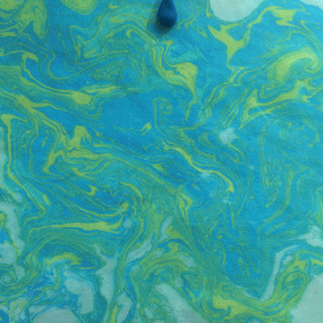
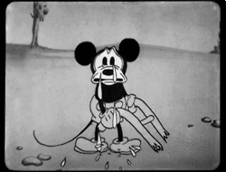

Las animaciones criticas funcionan como una exageración de los problemas sociales, como una forma de burla, pero no solo tiene un fin de divertir o entretener, sino también para dejar en claro o poner atención en los problemas reales que sufren diferentes personas en la sociedad.
¿Por qué eleji el tema?
En el blog trató de demostrar los diferenetes tipos de animaciones y sus importancias en la sociedad para dar a demostrar todavia el interes y la necesidad informar su fin y no dejar en malos entendidos.
Una critica social acerca de la perdida del alrededor.
Animación
08/10/22
Los Diferentes Tipos de Animación
Ranking
Tiras Cómicas
Titeres
2D FlipBook
Pintura animada
TV infantiles
Educacional
3D
Stop Motion
Tradicional
Criticas o Periodismo

Un ejemplo de la animación en formato Stopmotion.
<
Los GIF son un tipo de animación creadada apartir de launión de diferentes fragmentos de dinujo en cadena.
Investigación
08/10/22
La Animación 2D sigue siendo una de las técnicas tradicionales que siguen en pie en estos días por sumagnifico trabajo con las manos y la fluides de los dibujos aludiendo a un movimiento realista.la animación 2D sigue siendo una técnica tradicional muy utilizada, en parte gracias a la magia que supone dibujar a mano las piezas que se animarán a posteriori.
Animación 2D:Todo lo que debes de saber sobre esta técnica tradicional
Ana Torres
Ahora, ¿cómo se trabaja? Bueno para el proceso del 2D se requerie de 3 fases. La primera siendo la Pre-Producción, el momento donde se desarrola la idea de la historia, el guión y los personas para luego pasar al storyboard. El storyboardo tendra que incluir los detalles de los argumentos del guión en representaciones graficas y visuales.
La segunda fase se trata de la Producción, donde se requiere el uso de lo hecho en el paso anterior para producir la diferentes escenas necesarias, creación de fondo por utilizar, los detalles en cada movimiento que da el personaje para tener una apariencia más fluida. La segunda parte de la producción se trata de la Hoja de exposición, donde dirige los teimpos de escena, la banda sonora y las capas de la animación.
El paso final en la animación 2D es la postproducción. Ahora, el único objetivo es mejorar todo lo que se ha hecho antes tanto como sea posible. Se analiza cada una de las partes y elementos que componen la animación (tiempo de cada evento, modo de luz, movimiento...). Para que la historia se cuente y el mensaje llegue al usuario que lo ve, todos estos elementos deben ser correctos y acordes con las necesidades de las imágenes.
Cuando los expertos comprueban que todo está hecho correctamente, comenzamos a ofrecer realizar la pieza final en la forma o formas deseadas.
Stop Motion
La animación fotograma a fotograma se crea simulando el movimiento continuo de objetos estáticos mediante la creación de una serie de imágenes consecutivas.
Esto significa que cada fotograma de la animación es una imagen estática en la que los objetos se mueven o cambian ligeramente de posición -siempre manteniendo una progresión lógica de movimiento- y aquellos, junto con los fotogramas que otros, reproducen fotogramas a la velocidad adecuada, para crear una sentimiento. que estamos ante una película de animación, como cualquier otra, y que las cosas se mueven solas.
Cuando nos atrapa alguna producción cinematográfica animada, es inevitable preguntarnos cuánto trabajo implicó la realización de esa animación.
Monsuton
Blogero de Monsuton
La primera es, como en todo proceso creativo, la animación fotograma a fotograma. En este punto, debe especificar qué desea que capture la cámara. También deberá decidir qué funciones usar, como texto y video. Es hora de prepararse para varios eventos en los que se registrará el paso del tiempo. Me refiero a lugares. Para hacer esto, debe preparar cada uno de ellos y preparar las cosas que desea ver en ellos. Si no quieres saltarte ninguna animación fotograma a fotograma, puedes dibujar un guión gráfico con los detalles necesarios para facilitar la edición de las diferentes escenas.Ahora es el momento de preparar las luces para los espectáculos y configurarlos. Déjalo fijo desde el principio ya que será el mismo en todos los casos.
Debido a la naturaleza cuadro por cuadro de la animación, es fácil no tener más luz en sus imágenes que la iluminación artificial que configuró para iluminarlas.
Ya está todo listo, así que coloque los elementos que desee donde aparecen y encienda su cámara para tomar la primera foto. Una vez que tenga eso, mueva cualquier objeto que desee que se vea diferente al siguiente cuadro por cuadro y dispare la cámara. Repite este proceso tantas veces como quieras que aparezcan las imágenes en el vídeo después de editarlo. Sí, es largo y doloroso, pero el resultado merece la pena.
Cuando haya terminado, prepare todas sus fotos para editarlas en su computadora. Sin embargo, debes considerar que si lo escribiste en formato comprimido, tendrás que enviarlo en jpg. Así que puedes editarlo fácilmente con un programa de edición de fotos. Ahora es el momento de importarlos a un programa de edición de video para crear una animación stop motion. No olvides ajustar la velocidad entre fotogramas.
Animación 3D
La animación 3D es el proceso de colocar personajes y objetos en un espacio 3D y manipularlos para crear una sensación de movimiento. Los objetos se crean a partir de modelos 3D que se llevan al entorno digital utilizando herramientas de modelado 3D. También puede escanear objetos reales en la computadora y convertirlos en bloques de objetos animados en 3D.
El objetivo de los animadores 3D es mover objetos y personajes en un espacio determinado con la mayor precisión posible. Puede crear animaciones perfectas, pero si sus movimientos son torpes, estáticos o robóticos, todo su arduo trabajo se desperdiciará. Por lo tanto, pasan mucho tiempo aprendiendo los métodos de transporte para que sus imágenes sean creíbles.Aunque esta historia tiene lugar en el mundo de los vivos, aún se ajusta a la física de nuestro mundo, en su mayor parte.Desde nuestras películas favoritas de Disney hasta nuestros videojuegos preferidos, hemos convertido la animación 3D en una parte inseparable de nuestras vidas.
Tipos de Animación
Blogero ánonimo de Renderforest
A diferencia de la animación 2D tradicional, en la animación 3D los fotogramas deben pasar por el proceso de renderizado después de crear el modelo. Como decíamos antes, su principal función es dar vida a cosas intangibles que pueden ser utilizadas de infinidad de formas. Además, se puede utilizar en muchos proyectos de audio. Es una forma de vida flexible y flexible y puede adaptarse a diferentes necesidades según la industria en la que se encuentre. Por otro lado, existen diferentes formas de satisfacer las necesidades de los diferentes sectores, y cada uno de ellos cumple funciones diferentes.
Ahora veremos la diferencia entre 3D y 2D. La animación 2D es plana porque se basa en un plano 2D con ejes x e y. Piensa en Pinocho, el Aladino original y El Rey León, La Sirenita, Rick y Morty... podríamos seguir y seguir. Con la ayuda de un eje, 3D agrega profundidad a las imágenes, haciéndolas más realistas. La animación 2D representa el movimiento a través de una rápida sucesión de imágenes 2D, cada una ligeramente diferente a la anterior. La animación 3D se realiza creando modelos 3D y moviéndolos en el espacio 3D. La adición de un tercer eje brinda más opciones de movimiento y posicionamiento, lo que hace que el diseño sea más flexible.
Todo el proceso de animación es complejo y multifacético, pero estos son los pasos básicos.
Primero necesitamos construir nuestros objetos 3D. Como decíamos antes, los objetos se crean a partir de modelos informáticos en 3D. Un modelo básico es una red 3D de puntos, líneas y curvas dispuestas en la forma en que aparece un objeto. Una computadora ve las formas como formas geométricas puras. El mapa de objetos solo cobrará vida después de agregar colores y formas.Una vez que los personajes 3D están listos, es hora de colocarlos en sus partes y animar sus movimientos usando un software de animación 3D. Como verá en el video a continuación, los primeros pasos del proceso de animación son difíciles; los movimientos y cambios son extraños y antinaturales.La parte final del proceso de animación es el renderizado. Aquí es cuando la animación termina y se exporta. Este paso requiere mucha atención a los detalles para que la versión final quede perfectamente pulida.
La idea de donde surgio el tema de la animación puede deberse a las diferentes animaciones que he notado en alguno punto de mi vida, aparte de tener la admiracion del modo en que se hacian la animación antigua y el modo en el que usan los mensajes para dirijirse a las masas.

 Los Diferentes Tipos de Animación
Los Diferentes Tipos de Animación Investigación
Investigación